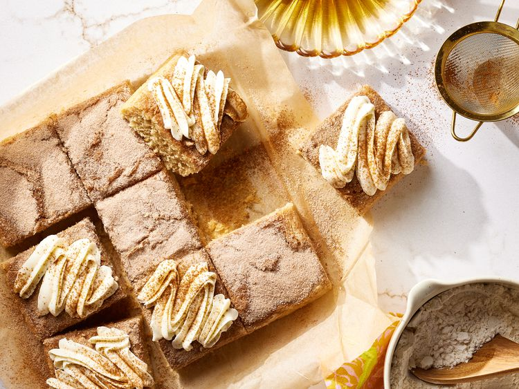

Cinnamon Sugar Snack Cake

Description
Cinnamon is often a complementary flavor, but it is an ingredient worth celebrating all on its own! This cake gives major snickerdoodle vibes; the welcome addition of tangy cream cheese frosting ties it all together. The cake itself starts with a base of cinnamon, brown sugar, and buttermilk flavors. The real beauty of this cake is the crackly top layer of cinnamon sugar on top. As you sprinkle on a generous layer of this mixture, you may find yourself asking: Is this too much? Have no fear: The cake itself contains less sweetener to make room for this topping, some of which sinks into the batter and some of which remains a perfect layer on top. After the cake cools, it gets finished with tangy, cream cheese frosting.
Ingredients
- 1 2/3 cups all-purpose flour
- 1 1/4 teaspoons baking powder
- 2 1/2 teaspoons ground cinnamon
- 6 ounces cream cheese
- 1/3 cup vegetable oil
- 3 tablespoons melted unsalted butter
- 1/2 cup plus 1/3 cup white sugar
- 2 large eggs
- 2/3 cup whipping cream
Steps To Prepare
- Preheat to 350 degrees F (175 degrees C) and position rack in center of oven. Coat a 9-inch square baking pan with cooking spray. Line bottom of pan with parchment paper and coat parchment with cooking spray.
- Whisk together flour, baking powder, 1 teaspoon cinnamon, and salt in a medium bowl.
- In the bowl of a stand mixer fitted with a whisk attachment, mix together oil and butter. Mix in 1/2 cup white sugar and the brown sugar until well combined. Add eggs, one at a time, mixing well to incorporate and scraping bowl well after each addition. Mix in 2 teaspoons vanilla.
- Add about 1/3 of flour mixture; mix at low speed until combined. Mix in half of buttermilk, scraping bowl well. Repeat, alternating between flour mixture and buttermilk, until both are fully incorporated and batter is smooth.
- Pour batter into prepared pan and spread in an even layer. Stir together remaining 1/3 cup white sugar and 1 1/2 teaspoons cinnamon in a small bowl. Sprinkle cinnamon sugar evenly over batter. Wash and dry stand mixer bowl and whisk attachment
- Bake until a toothpick inserted into center comes out clean or with a few moist crumbs, 20 to 25 minutes. Transfer pan to a wire rack and let cool completely